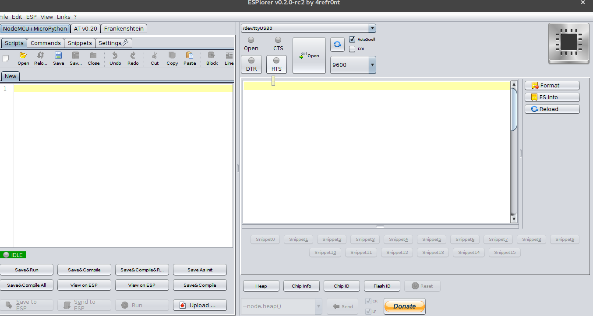
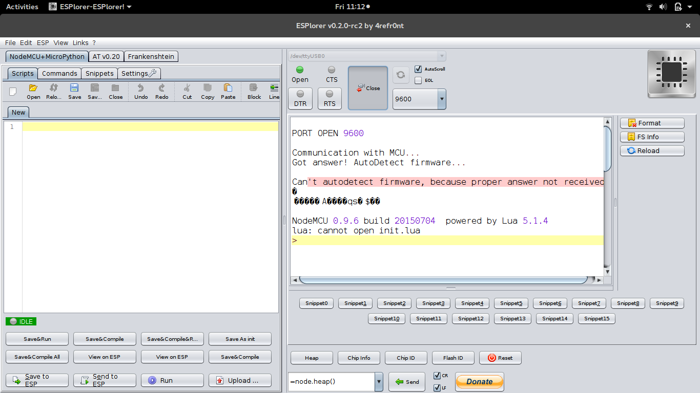
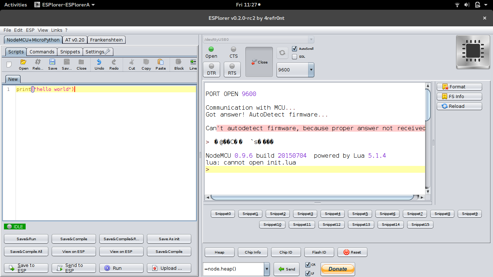
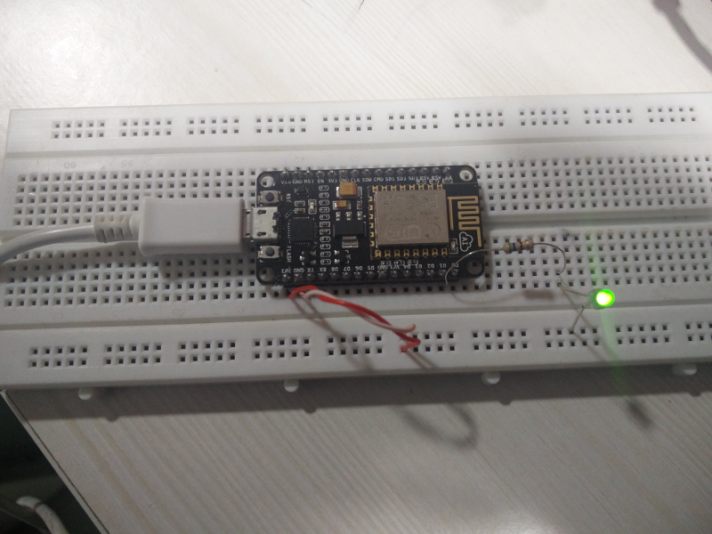

NodeMCU
Node MCU - Introduction to Hardware
NodeMCU Dev Kit V2 Pinout 
The device comes with GPIO's, similar to arduino. Not all GPIOs are available at the same time. Please refer to Circuits4You Post to know more on GPIO's and its usage
Setting up Esplorer
We will be using Esplorer IDE for programming the chip since it offers far more features than ESPtool.The software is written in Java and is compatible with machines running Java SE or later
- Install Java.
sudo add-apt-repository ppa:webupd8team/java -y sudo apt-get update sudo apt-get install oracle-java8-installer
- Download Esplorer from here and extract it.
- Launch Esplorer
sudo java -jar ESPlorer.jar
 - Select the device address (ttyUSB0 in my case) and click on Open.After establishing connection , you may then press reset on dev kit.
- On the left pane (Editor), you may enter the script. 
- Click on Send to ESP button in the bottom left and observe the results on right pane(serial monitor).
" lua: cannot open init.lua ". The error is normal and expected.
init.lua
For a code to be executed upon reboot it should be saved as init.lua script in ESP8266. It should considered as a application gateway with the condition ; if no code - ignore but if yes execute code.
- Hello World
Save the following file as init.luaprint("Hello World")
Now upon each reboot Hello World will be printed on the serial monitorWhen you save changes to an init.lua in the editor it is automatically uploaded to the chip.
- Write value to a GPIO
PIN = 1 gpio.mode(PIN,gpio.OUTPUT) -- Set pin 1 as output. gpio.write(PIN,gpio.HIGH) -- Set D1 to high.
save the code as init.lua and now PIN D1 will be high.Connect an LED to pin D1 via 560 Ohm resistance to observe the output.
- Read value from GPIO
PIN = 2 gpio.mode(PIN,gpio.INPUT) -- PIN 2 as input print(gpio.read(PIN)) --Print state of PIN 2
Connect PIN 2 to ground or VCC(3.3v) and then press reset. 0 or 1 value will be printed depending on the input to PIN 2
- Read Value in Loop
PIN = 2 gpio.mode(PIN,gpio.INPUT) -- PIN 2 as input tmr.alarm(0, 1000, 1, function () --print value in 1 second interval print(gpio.read(PIN)) ----Print state of PIN 2 end) - Blink LED
PIN = 1 gpio.mode(PIN,gpio.OUTPUT) -- PIN 2 as input tmr.alarm(0, 1000, 1, function () --execute loop in 1 second interval if status==0 then status=1 gpio.write(PIN, gpio.HIGH) else status =0 gpio.write(PIN, gpio.LOW) end end)An infinite loop should not be used in init.lua as it will make the chip unresponsive. If that happens flash the firmware again using esptool.py.If that does not clear init.lua flash an old firmware and then flash a new one as shown in the previous tutorial. If absolutely necessary ,insert a delay of 5 seconds before the infinite loop so that the file.format() may be requested after reset.